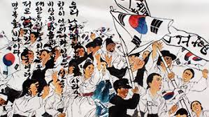
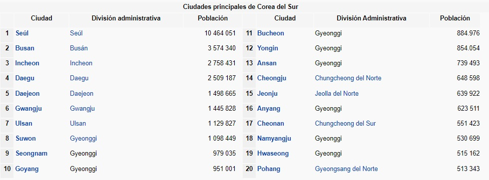
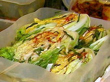
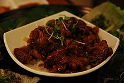
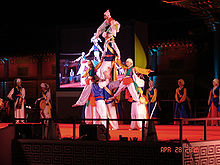
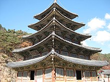
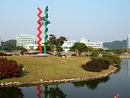
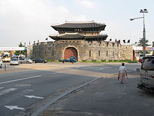

"COREA DEL SUR"
Historia de Corea del Sur
Los coreanos comparten una historia ininterrumpida
en el mismo territorio que se remonta miles de años atrás. La península actual, dividida políticamente,
es un reflejo de épocas remotas como el período de los Tres Reinos (57 a.C.-668), durante el cual las
dinastías Goguryeo, Silla y Baekje compitieron por el control de un dominio que se adentraba
en Manchuria. La relación de Corea con poderosos vecinos como China y Japón ha condicionado tradicionalmente
su destino, mientras que los vínculos con Occidente añaden aún más complejidad a la conciencia nacional.

Poblacion
Corea del Sur, situada en el este de Asia, tiene una superficie de 100.370 Km2.
Corea del Sur, con una población de 51.781.000 personas, se encuentra en la posición 28 de la tabla de población,
compuesta por 196 países y tiene una alta densidad de población, con 516 habitantes por Km2.

Comida
La cocina coreana, hanguk yori (한국요리, 韓國料理), o hansik (한식, 韓食),
ha evolucionado a través de los siglos de cambio social y político.Los ingredientes y platos varían según la provincia.
Hay muchos platos regionales significativos que han proliferado con diferentes variaciones en todo el país. La cocina de
la corte real coreana una vez reunió todas las especialidades regionales únicas para la familia real. Por mucho tiempo, el
consumo de los alimentos ha sido regulado por una serie de modales y etiqueta, tanto para los miembros de la familia real,
como para los campesinos coreanos.La cocina coreana se basa en gran medida en los fideos, arroz, tofu, verduras, pescado y carnes.
La comida tradicional de Corea se caracteriza por el número de acompañamientos, banchan (반찬), que se sirven junto con el arroz de
grano corto hervido. Cada comida es acompañada por numerosos banchan. Entre los platillos surcoreanos tradicionales más consumidos se
encuentran el bulgogi, el bibimbap y el galbi.El té es parte importante de la gastronomía nacional, y la ceremonia del té es una de las
tradiciones más arraigadas de la población actual. Los tés coreanos se preparan con cereales, semillas, frutas y hierbas medicinales.
Las bebidas alcohólicas han sido elaboradas a partir de cereales desde antes del siglo IV. Entre los principales licores surcoreanos
se encuentran el “Takju” (licor no refinado), el “Cheongju” (licor medicinal) y el “Soju” (licor destilado). El takju es la base para
la elaboración de otras bebidas regionales, aumentando o diminuyendo el tiempo de fermentación.


Fotos



